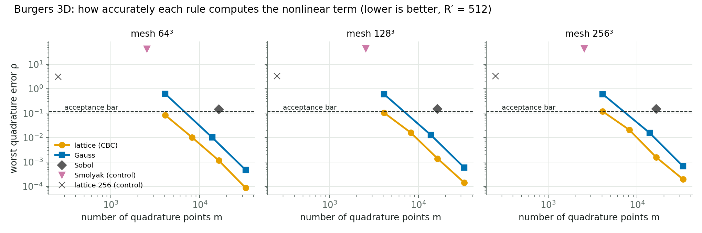
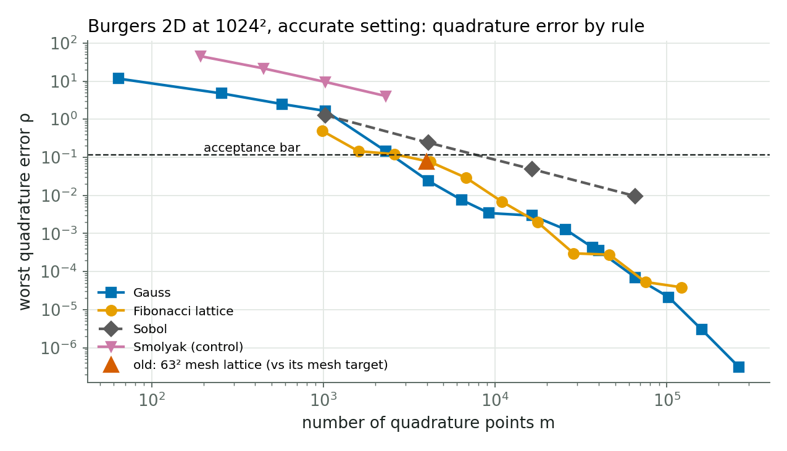
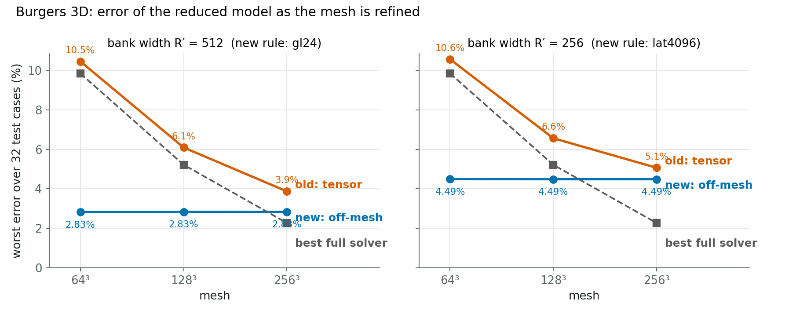
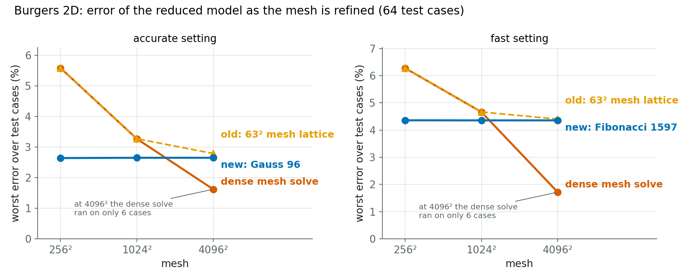

Burgers 2D and 3D · 16 October 2026
All numbers are from validation or held-out cases, scored against the older first-order references, so they are provisional (3D can move by up to about 2.8 %).




2D, held-out job, one H200. Median solve time per query in ms (query time minus output decode). Ratio = time at 4096² ÷ time at 256². Across all 40 rule and setting combinations the ratio was 0.97–1.04, while the mesh grew 256×.
| Setting | Rule | 256² | 1024² | 4096² | Ratio 4096²/256² |
|---|---|---|---|---|---|
| accurate | Old: mesh lattice 63² | 47.7 | 46.9 | 46.6 | 0.98 |
| accurate | Gauss 64² | 40.5 | 40.5 | 39.7 | 0.98 |
| accurate | Gauss 96² | 55.9 | 55.5 | 55.4 | 0.99 |
| accurate | Gauss 128² | 79.3 | 79.1 | 78.6 | 0.99 |
| accurate | Fibonacci 6765 | 54.7 | 54.5 | 53.9 | 0.99 |
| fast | Old: mesh lattice 63² | 18.9 | 18.8 | 19.1 | 1.01 |
| fast | Gauss 64² | 16.4 | 16.5 | 16.7 | 1.02 |
| fast | Fibonacci 1597 | 13.3 | 13.0 | 13.4 | 1.01 |
| fast | Fibonacci 6765 | 20.0 | 19.9 | 20.2 | 1.01 |
The solve never touches the mesh, so it is flat. The full query still grows a little, because reading the initial field and decoding the output are done on the mesh: decode takes about 0.2 ms at 256² and about 14–18 ms at 4096² (accurate setting).
3D, held-out cases (64), 512-wide bank. Error is worst / typical (the same at every mesh for off-mesh rules). The speed-up is the time of the cheapest full simulation that is at least as accurate, divided by our time, in the same job on the same GPU; below 1× is slower. The "finer reference" column requires the full simulation to match our accuracy against the finer reference.
| Method | Points | Error | 64³ | 128³ | 256³ | 256³, finer ref. | ms at 256³ |
|---|---|---|---|---|---|---|---|
| Old: exact tensor (mesh) | — | 10.5 → 6.1 → 3.9 % | 0.16× | 0.53× | 2.2× | — | 90 |
| Lattice | 4,096 | 2.8 / 1.1 % | 0.18× | 0.54× | 3.1× | 7.8× | 63 |
| Lattice | 16,384 | 2.8 / 1.1 % | 0.09× | 0.31× | 2.5× | 6.1× | 81 |
| Korobov lattice | 16,381 | 2.8 / 1.1 % | 0.09× | 0.29× | 2.4× | 6.0× | 83 |
| Gauss 16³ | 4,096 | 4.3 / 1.2 % | 0.18× | 0.56× | 3.2× | — | 62 |
| Gauss 24³ (deployed) | 13,824 | 2.8 / 1.1 % | 0.11× | 0.34× | 2.6× | 6.4× | 77 |
| Gauss 32³ | 32,768 | 2.8 / 1.1 % | 0.06× | 0.20× | 1.9× | 4.7× | 105 |
| Sobol | 16,384 | 3.3 / 1.2 % | 0.10× | 0.32× | 2.5× | — | 79 |
| Lattice (too few points) | 256 | fails (37.2 / 12.8 %) | — | — | — | — | 58 |
| Smolyak sparse grid | 2,559 | fails (41.5 / 23.3 %) | — | — | — | — | 64 |
2D, held-out cases (64), accurate setting. Worst error at 256² / 1024² / 4096²; speed-up at 4096² against the cheapest equally accurate full simulation, worked out from the study's timing table.
| Method | Points | Worst error | Speed-up at 4096² |
|---|---|---|---|
| Full simulation (reference point) | — | 5.5 / 2.9 / 2.4 % | 1× |
| Old: dense mesh sum | all nodes | 5.6 / 3.3 / 1.6 % | — |
| Old: 63² mesh lattice | 3,969 | 5.6 / 3.3 / 1.6 % | 11× |
| Gauss 64² | 4,096 | 2.6 / 2.6 / 1.6 % | 13× |
| Gauss 96² (deployed) | 9,216 | 2.6 / 2.6 / 1.6 % | flat solve, about 55 ms |
| Gauss 128² | 16,384 | 2.6 / 2.6 / 1.6 % | 7.4× |
| Fibonacci lattice | 6,765 | 2.6 / 2.6 / 1.6 % | 10× |
| Fibonacci lattice | 17,711 | 2.6 / 2.6 / 1.6 % | 5.7× |
| Sobol | 4,096 | 2.8 / 2.8 / 1.6 % | not timed |
| Gauss 32² (too few points) | 1,024 | fails (9.0 / 8.8 / 2.7 %) | — |
Every working rule gives the same accuracy. Speed depends on mesh size: slower on small meshes, about even in the middle, clearly faster on large ones.